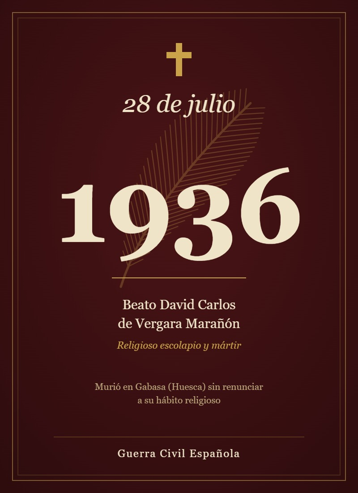

El Beato David Carlos de Vergara Marañón, cuyo nombre religioso fue David del Santísimo Sacramento, fue un religioso de las Escuelas Pías, perteneciente a la comunidad escolapia de Peralta de la Sal. Fue uno de los trece escolapios mártires que entregaron su vida durante la persecución religiosa desarrollada en España en 1936, en el contexto de la Guerra Civil Española.
La Santa Sede lo identifica oficialmente como “Fr. David Carlos Marañón, frater opifex”, es decir, hermano religioso dedicado a un trabajo u oficio dentro de la comunidad. El documento pontificio señala que nació en Asarta, en la archidiócesis de Pamplona, el 29 de diciembre de 1907, y que murió en Gabasa el 28 de julio de 1936.
Su vida estuvo marcada por la sencillez, la oración, el trabajo y su compromiso con la vocación escolapia. No fue sacerdote, sino hermano religioso, y desarrolló principalmente tareas de servicio dentro de la comunidad.
